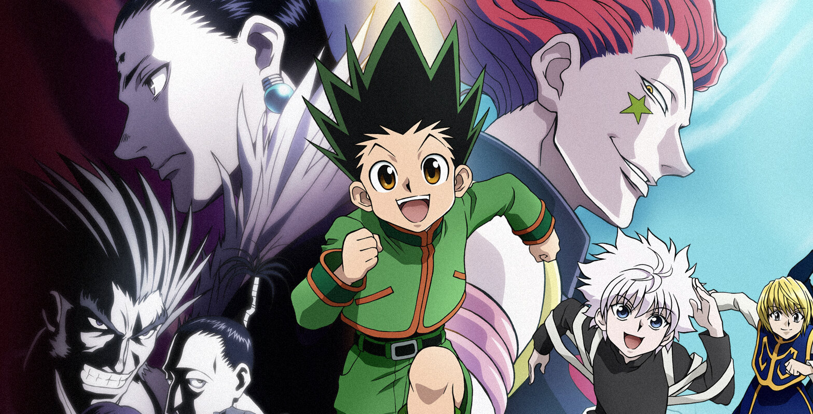
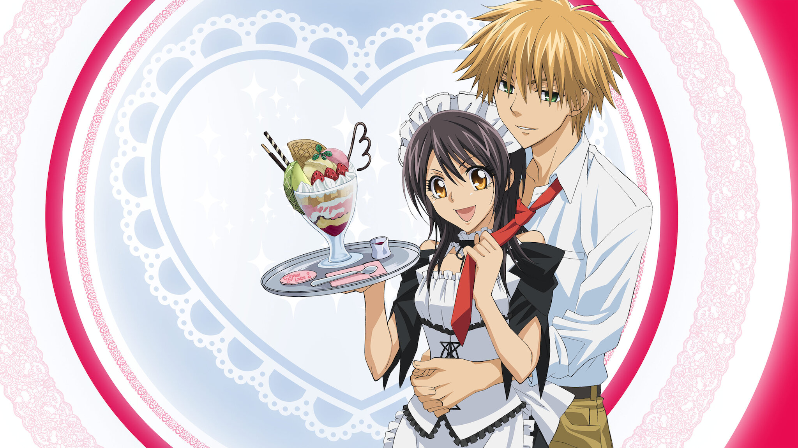

Hunter X Hunter: Gon Freecss aspires to become a Hunter, an exceptional being capable of greatness. With his friends and his potential, he seeks out his father, who left him when he was younger.
Plot is Peak
Character motivation and inner turmoil is so empowering
Chimera Ant Arc is absolutely insane (because of Gon's leveling up).
The development of the character's emotions and powers along the plot is inspiring.
Aura Farming Going On
Killua is literally a beast. Always waking with his arms relaxed behind his head.
Killua literally standing on the back of a wild running horse.
Killua literally busting from the chains like it's nothing.
Whiplash From Side Love Story
King Mereum and Komugi start off enemies who play some form of checkers.
They play many games and some nearly end with Komugi getting very harmed or betting her own life.
The King learns how to care for a human and wants to be with her on his own death bed.

My Hero Academia: In a world populated with superhumans, the superhero-loving Izuku Midoriya is without power. However, after the Quirkless dreamer Izuku inherits the powers of the world's best superhero, All Might, his hopes of becoming the top hero are now possible. Once enrolled in the high school for heroes, U.A., Izuku soon discovers being a hero is much more complicated than it appears.
Deku is so Cute!
Deku is literally my little cinnamon roll boi. He is a cute little excited baby boi at the beginning of the show and you watch him have such big dreams only to be crushed because he doesn't have an extra knuckle in his pinky toe.
Deku literally gets a power and breaks his arms all the time like the little cutie that he is.
Deku just wants to be Kacchan's friend and is determined to get there someday!
Kacchan is so Hot!
My bro Kacchan has incredible shoulder and back muscles. It's unfair.
Kacchan has a very attractive face card that is always lethal....but maybe in more ways than one.
Kacchan is mad strong and very good at whipping up some delicious food!
PLOOOOOT!
Deku in that Overhaul arc.
Deku leveling up his percentage of One For All.
Deku in that Vigilante arc tho!
Maid Sama: Ayuzawa Misaki serves as the student council president at Seika High. However, unbeknownst to her classmates, she works part-time as an employee at a Maid Cafe. Usui Takumi, a boy from her school, discovers this secret.
Seriously so Cute
Main character interactions are always interesting and funny!
There is family struggles and hard working from the main girl.
Love me some tsundere behavior and a cool bad-boy pairing!
Comfort Anime
Easy high school vibes and not insane plot.
Always a funny and smirkey moment with those two.
Literally if you want to be wooed, then watch it.
Takumi Usui
Dude lept off a building just cause his girl was panicking and he knew it was the only way.
Dude was mad protective and observant when it came to his girl.
Dude's face, the hair, the abs, the personaility, the...everything!

Demon Slayer: A family is attacked by demons and only two members survive - Tanjiro and his sister Nezuko, who is turning into a demon slowly. Tanjiro sets out to become a demon slayer to avenge his family and cure his sister.
Tanjiro is Such a Cutie!
Tanjiro would sacrifice his entire life just to save his sister.
Tanjiro is so polite and hard working!
Tanjiro genuinely feels for all people - even shedding a tear for some demons.
Plot is Plotting
Dude's whole family was massacred in the first episode. Way to start the show!
Rengoku getting killed off in that movie was fire. Sad, but still fire.
Nezuko being able to overcome the sun was insane!
Animation is Fire!
Literally watching the waterbreathing technique is dope.
The explosion of the Demon Slayer Palace is insane!
The animation of the Infinity Castle is blowing my mind!
Let Me Eat Your Pancreas: A high school student discovers one of his classmates, Sakura Yamauchi, is suffering from a terminal illness. This secret brings the two together, as she lives out her final moments.
UGGGHHH THE SADNESS!!
When she gets murdered at the end instead of dying from her illness, it litterlly killed me too.
When dude cries to her mother after the funeral, it made me cry too.
When they hug during the fireworks, I felt like I was exploding into the night sky.
Cute Homeboi
My boy thinks its better not to get to know people because he doesn't want to feel sadness.
My boy is so respectable when he princess-carries my girl even though there is that one sus scene.
My boy sending that text and knowing exactly what to say to my girl.
Character Interactions
That. One. Scene.
When Haru takes Sakura on a vaycay, it is seriously peak.
The letters after her death when they basically talk inside the book of The Little Prince!
Tokyo Ghoul: A Tokyo college student is attacked by a ghoul, a superpowered human who feeds on human flesh. He survives, but has become part ghoul and becomes a fugitive on the run.
First Season
Dude literally gets almost brutally murdered in the first episode!
My boy starts off so freaked out cause he can't eat a burger anymore and then proceed to eat people instead. (That's a joke, but also not really.)
Getting kidnapped is so OP.
Character Glow Up
White hair. Must I say anything else?
Dude goes from being a total wimp to being the most brutal killer and so nonchalant like "let me break my leg even though it hurts, i look so cool doing it."
The knuckle cracking thing. If you know, you know.
Jason
Jason got copped right out of the movies.
The counting backwards from 1,000 in increments of 7 is actually insane.
Dude got bodied so fast though.
Horimiya: Two very different people - an academically successful schoolgirl and a quiet loser schoolboy - meet and develop a friendship.
The Romance
Getting together in the second episode is literally iconic.
Their domestic relationship is my will to live.
Love their semi-violent and sweet interactions that make me almost pee my pants with laughter.
Comfort Anime
The high-school cool people vibes is crazy.
Music is fire and so soothing.
Plot isn't too much so you can easily focus on the characters.
Character Glow Up
Thank goodness this mangey dude got a haircut.
Not the nine peircings!
Not the tatoos!
The Promised Neverland: When three gifted kids at an isolated idyllic orphanage discover the secret and sinister purpose they were raised for, they look for a way to escape from their evil caretaker and lead the other children in a risky escape plan.
PLOOOOOOT!!!
Dudes literally just start off in an innocent-looking orphanage.
When you find out the mother was a previous orphan herself = mind blown.
The demons taking away Norman is such a key plot point.
Smart Little Children
When they all conspire to escape the orphanage it actually sends me into a spiral. It's that good.
Ray is actually crazy intelligent and the friggin son of the Mom!
Norman is such a baddie and no way he actually died because he's way too smart for that kind of ending.
World-Building
The entire Demons/Humans "lets split the world in half" is really working for me.
Love that Norman gets resurrected. Jesus must have come back early!
The world beyond the wall and that huge pit is so crazy! I love it!